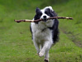
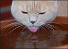
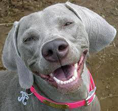

Algunas Recomendaciones

Manten un Peso Saludable
Manten a tu mascota entrenada y asegurate que camine y corra para quemar calorias. 
Mantenlos hidratados
Asegurate que tus mascotas tengan agua limpia y fresca para no contraer infecciones urinarias. 
Tomate un tiempo para revisar sus dientes
El cuidado de dientes adecuado puede reducir el mal aliento de tu mascota.